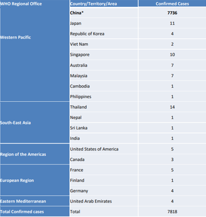
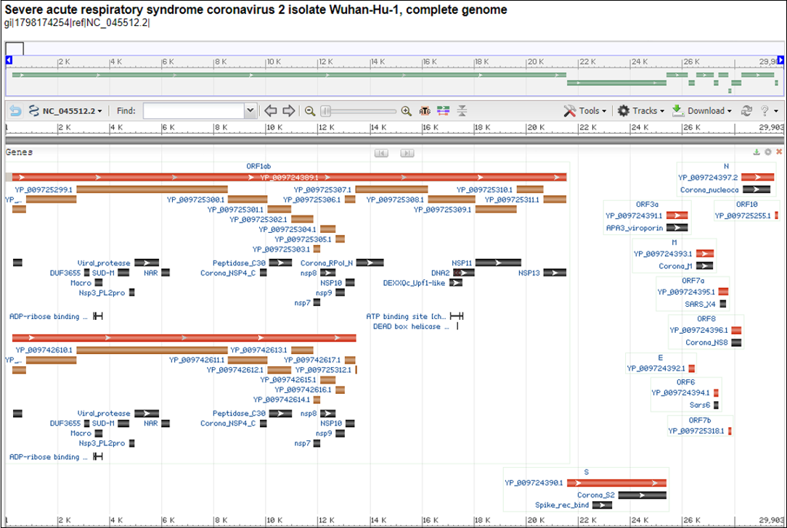

Introduction: A Tale of Two Doctors
by Chris Lee and Phillip Compeau
One of the world’s most important warning systems for a deadly new outbreak is a doctor’s or nurse’s recognition that some new disease is emerging and then sounding the alarm. It takes intelligence and courage to step up and say something like that, even in the best of circumstances.
Tom Inglesby 1, Director of the Center for Health Security at Johns Hopkins Bloomberg School of Public Health
The world’s fastest outbreak
On February 21, 2003, a Chinese doctor named Liu Jianlun flew to Hong Kong to attend a wedding and checked into Room 911 of the Metropole Hotel. The next day, he became too ill to attend the wedding and was admitted to a hospital. Two weeks later, Dr. Liu was dead.
On his deathbed, Dr. Liu stated that he had recently treated sick patients in Guangdong Province, China, where a highly contagious respiratory illness had infected hundreds of people. The Chinese government had made brief mention of this incident to the World Health Organization but had concluded that the likely culprit was a common bacterial infection. By the time anyone realized the severity of the disease, it was already too late to stop the outbreak. On February 23, a man who had stayed across the hall from Dr. Liu at the Metropole traveled to Hanoi and died after infecting 80 people. On February 26, a woman checked out of the Metropole, traveled back to Toronto, and died after initiating an outbreak there. On March 1, a third guest was admitted to a hospital in Singapore, where sixteen additional cases of the illness arose within two weeks.23.
Consider that it took four years for the Black Death, which killed over a third of all Europeans in the 14th Century, to travel from Constantinople to Kiev. Or that HIV took two decades to circle the globe. In contrast, this mysterious new disease had crossed the Pacific Ocean within a week of entering Hong Kong.
As health officials braced for the impact of the fastest-traveling virus in human history, panic set in. Businesses were closed, sick passengers were removed from airplanes, and Chinese officials threatened to execute infected patients who violated quarantine. In the process, the mysterious new disease earned a name: Severe Acute Respiratory Syndrome, or SARS.
Finding the source of the outbreak
SARS was deadly, killing close to 10% of those who became sick.4 But it also struggled to spread much farther within the human population, and it was contained in July 2003 with fewer than 10,000 confirmed symptomatic cases worldwide.
Scientists initially thought that humans had contracted SARS from palm civets, which are native to Guangdong. But research would later show that the disease likely originated in bats, a notorious disease carrier.5
In 2017, researchers published the result of five years of sampling horseshoe bats from a cave in Yunnan province. They found that the bats harbored coronaviruses with remarkable genetic similarity to SARS, and they hypothesized that the virus may have come from horseshoe bats. Yet their work has become infamous because they identified additional viruses in the bats that were related to SARS but just as capable of entering human cells. Their words are now chilling:6
We have also revealed that various [viruses] … are still circulating among bats in this region. Thus, the risk of spillover into people and emergence of a disease similar to SARS is possible. This is particularly important given that the nearest village to the bat cave we surveyed is only 1.1 km away, which indicates a potential risk of exposure to bats for the local residents. Thus, we propose that monitoring of SARSr-CoV evolution at this and other sites should continue, as well as examination of human behavioral risk for infection and serological surveys of people, to determine if spillover is already occurring at these sites and to design intervention strategies to avoid future disease emergence.
A new threat emerges
On December 30, 2019, a Chinese ophthalmologist named Li Wenliang sent a WeChat message to fellow doctors at Wuhan Central Hospital, warning them that he had seen several patients with symptoms resembling SARS 1. He urged his colleagues to wear protective clothing and masks to shield them from this new potential threat.
The next day, a screenshot of his post was leaked online, and local police summoned Dr. Li and forced him to sign a statement that he had “severely disturbed public order”. He then returned to work, treating patients in the same Wuhan hospital.
Meanwhile, the World Health Organization (WHO) received reports regarding multiple pneumonia cases from the Wuhan Municipal Health Commission and activated a support team to assess the new disease. The WHO declared on January 14 that local authorities had seen “no clear evidence of human-to-human transmission of the novel coronavirus”. By this point, it was now too late.
Throughout January, the virus silently raged through China, spreading to both South Korea and the United States as Lunar New Year celebrations took place within the country. By the end of the month, the disease was in 19 countries, as shown below.
 The number of reported confirmed cases of 2019-nCoV (COVID-19) as of January 30th, 2020. Figure courtesy World Health Organization 7.
Within the next two months, the disease exploded across the planet, becoming a pandemic and earning a name in the process: Coronavirus disease 2019 (COVID-19).
As for Dr. Li? Despite warning against the risk of this new virus, he contracted the disease from one of his patients on January 8. He continued working in the hospital, and entered the hospital on January 31. Within a week, he was dead, one of the first of millions of COVID-19 casualties.
Why were the two outbreaks so different?
The similarity between SARS and COVID extends well beyond their symptoms. The viruses causing these diseases, whose respective names are SARS coronavirus (SARS-CoV) and SARS coronavirus 2 (SARS-CoV-2) are both coronaviruses, which means that their outer membranes are covered in a layer of spike proteins that cause them to look like the sun’s corona during an eclipse (see figure below). In fact, if we look at the two viruses under a microscope, they look virtually identical.
 Coronviruses as seen under a microscope. The fuzzy blobs on the cell surface are spike proteins, which the virus uses to gain entry to host cells. Figure courtesy F. Murphy and S. Whitfield, CDC8.
Coronviruses as seen under a microscope. The fuzzy blobs on the cell surface are spike proteins, which the virus uses to gain entry to host cells. Figure courtesy F. Murphy and S. Whitfield, CDC8.
Both viruses not only look similar, they also use the same mechanism to infect human cells, when the spike protein on the virus surface bonds to the ACE2 enzyme on a human cell’s membrane.910 So why did SARS fizzle, but SARS-CoV-2, a disease that is on average less harmful1112 and less deadly to individuals, transform into an uncontrollable pandemic? The most likely explanation for the ability of SARS-CoV-2 to spread across far more countries and remain a public health threat even in the face of lockdowns is that it spreads more easily (i.e., it is more infectious.)
Part of the reason for the spread of SARS-CoV-2 is that it can be spread by individuals that are asymptomatic,13 a method of transmission that was never found in SARS.14 But we also wonder if we can find a biological basis for the increased infectiousness of SARS-CoV-2.
In this module, we will place ourselves in the shoes of early SARS-CoV-2 researchers studying the new virus in January 2020. The virus’s genome (the 30,000 nucleotide sequence making up its DNA) was published on January 101516, and an annotation of this genome showing the position of the virus’s genes is shown in the figure below. Upon sequence comparison, SARS-CoV-2 was found to be related to several coronaviruses isolated from bats and distantly related to SARS-CoV, the viral strain that caused the 2003 SARS outbreak. In fact, SARS-CoV-2 has a sequence identity of around 96% with bat coronavirus RaTG13, providing further evidence that the virus originated in bats.
 An annotated genome of SARS-CoV-2. The Spike protein, found at the bottom of this image, is labeled “S” and begins at position 21,563. Accessed from GenBank: https://go.usa.gov/xfzMM.
We now ask ourselves two questions. First, can we use the virus’s genome to determine the structure of its spike protein? Second, once we know the structure of the SARS-CoV-2 spike protein, how does its structure and function differ from the same protein in SARS-CoV? These two questions are central to understanding (and therefore fighting) this deadly virus.
We will split our work on these two questions. If you are already familiar with protein structure prediction, then you may want to skip ahead to the second part of the module, in which we discuss differences between the two viruses.
Continue to part 1: structure prediction
Jump to part 2: spike protein comparisons
-
Green, A. (2020, February 18). Li Wenliang. The Lancet, 395(10225), P682. https://doi.org/10.1016/S0140-6736(20)30382-2 ↩ ↩2
-
Hung L. S. 2003. The SARS epidemic in Hong Kong: what lessons have we learned?. Journal of the Royal Society of Medicine, 96(8), 374–378. https://doi.org/10.1258/jrsm.96.8.374 ↩
-
Update 95 - SARS: Chronology of a serial killer. (2015, July 24). Retrieved August 17, 2020, from https://www.who.int/csr/don/2003_07_04/en/ ↩
-
CDC SARS Response Timeline. 2013, April 26. Retrieved August 17, 2020, from https://www.cdc.gov/about/history/sars/timeline.htm ↩
-
Li, W., Shi, Z., Yu, M., Ren, W., Smith, C., Epstein, J., Wang, H., Crameri, G., Hu, Z., Zhang, H., Zhang, J., McEachern, J., Field, H., Daszak, P., Eaton, B. T., Zhang, S., Wang, L. (2005). Bats Are Natural Reservoirs of SARS-Like Coronaviruses. Science, 310(5748), 676-679. doi:10.1126/science.1118391 ↩
-
Hu, B., Zeng, L., Yang, X., Ge, X., Zhang, W., Li, B., Xie, J., Shen, X., Zhang, Y., Wang, N., Luo, D., Zheng, X., Wang, M., Daszak, P., Wang, L., Cui, J., Shi, Z. 2017. Discovery of a rich gene pool of bat SARS-related coronaviruses provides new insights into the origin of SARS coronavirus. PLOS Pathogens, 13(11). doi:10.1371/journal.ppat.1006698 ↩
-
Novel Coronavirus(2019-nCoV) Situation Report – 10. (2020, January 30). https://www.who.int/docs/default-source/coronaviruse/situation-reports/20200130-sitrep-10-ncov.pdf?sfvrsn=d0b2e480_2 ↩
-
Murphy, F., Whitfield, S. 1975. ID#: 10270. Public Health Image Library, CDC. https://phil.cdc.gov/Details.aspx?pid=10270 ↩
-
Shang, J., Ye G., Shi, K., Wan, Y., Luo, C., Aihara, H., Geng, Q., Auerbach, A., Li, F. 2020. Structural basis of receptor recognition by SARS-CoV-2. Nature 581, 221-224. ↩
-
Li, F., Li, W., Farzan, M., Harrison, S. C. 2005. Structure of SARS Coronavirus Spike Receptor-Binding Domain Complexed with Receptor. Science 309, 1864-1868. ↩
-
Q&A on coronaviruses (COVID-19). (2020, April 17). https://www.who.int/emergencies/diseases/novel-coronavirus-2019/question-and-answers-hub/q-a-detail/q-a-coronaviruses ↩
-
Paules C.I., Marston H.D., Fauci A.S. 2020. Coronavirus Infections—More Than Just the Common Cold. JAMA. 323(8):707–708. doi:10.1001/jama.2020.0757 ↩
-
Tan, J., Liu, S., Zhuang, L., Chen, L., Dong, M., Zhang, J., & Xin, Y. 2020. Transmission and clinical characteristics of asymptomatic patients with SARS-CoV-2 infection. Future Virology, 10.2217/fvl-2020-0087. https://doi.org/10.2217/fvl-2020-0087 ↩
-
Severe Acute Respiratory Syndrome (SARS) Frequently Asked Questions. (n.d.) https://www.cdc.gov/sars/about/faq.html ↩
-
Severe acute respiratory syndrome coronavirus 2 isolate Wuhan-Hu-1, complete genome. https://www.ncbi.nlm.nih.gov/nuccore/MN908947 ↩
-
Annotated Severe acute respiratory syndrome coronavirus 2 isolate Wuhan-Hu-1, complete genome. https://go.usa.gov/xfzMM ↩